Home › F · IOPs and biogeochemistry
Why do we care about IOPs? Because they track Chl, particulate organic carbon, dissolved organic carbon and size, and can be measured at high frequency. This module builds that link from the cross-section formula and reviews the field relations of slides 65–84, including their limits.
From particles to IOPs
Each IOP is the sum over particle classes (slide 63):
| Symbol | Name | Meaning | What it implies | Numbers assigned |
|---|---|---|---|---|
| \mathrm{IOP} | a, b, b_b or c [m⁻¹] | Any inherent optical property of particles. | ||
| \sigma_i | IOP cross-section [m²] | σ = Q·S for one particle of class i. | ||
| \frac{N_i}{V} | number concentration [m⁻³] | Particles of class i per cubic metre. | Many small particles can outweigh a few large ones. | example: 10⁷ m⁻³ (illustrative) two-population example: 10¹¹ m⁻³ (0.5 µm) vs 10⁶ m⁻³ (10 µm) (illustrative) |
| Q_i | efficiency factor [—] | Flux absorbed or scattered ÷ flux hitting the geometric cross-section. | Q ≈ 2 for large non-absorbing spheres; ≪ 1 for very small ones. | large sphere: ≈ 2 (textbook/van de Hulst) r = 5 µm, m = 1.05, 550 nm (Mie): 1.60 (verified.json) |
| S_i | geometric area [m²] | πr² for a sphere of radius r. | Large particles ∝ area, small particles ∝ volume (slide 64). | r = 5 µm: 7.854e-11 m² (computed) |
Example (Python). 10⁷ m⁻³ spheres of 5 µm radius with Q = 2: c = 1.57e-03 m⁻¹; with the Mie Q (1.60) 1.26e-03 m⁻¹. Small numerous particles can dominate the total cross-section: a population of 0.5 µm / 10¹¹ m⁻³ gives 70.7×10⁻³ m⁻¹, a population of 10 µm / 10⁶ m⁻³ only 0.63×10⁻³ m⁻¹.
Empirical relations and their spread
- Scattering and Chl (slide 65): bp(550) = 0.30 Chl0.7 — 0.06, 0.30, 1.50 m⁻¹ for Chl = 0.1, 1, 10 (spread ≈ ×2–3).
- Size (slide 68): N(D) ∝ D−ξ, cp ∝ λ−γ, ξ = γ + 3.
- bbp/bp (slide 71): index first, then size.
- Particle absorption (slide 74): POC/SPM = 0.0133 exp[1.27 ap(675)/ap(570)].
- CDOM: weak link to Chl, regional links to DOC (slides 75–76), conservative mixing with salinity (slide 77).
Fluorescence, diel cycles and fronts
Fluorescence depends on Chl, pigment packaging and photoprotective quenching (slides 78, 80). Attenuation and bbp show daily cycles of growth and loss that fluorescence does not (slides 81–83). bbp/bp distinguishes a bloom (low) from a nepheloid layer (high) (slide 84).
Worked example, quick Q&A and memory hooks
With bp(550) = 0.30 Chl0.7: Chl 0.1 → 0.060 m⁻¹, Chl 1 → 0.30, Chl 10 → 1.50. Each tenfold increase multiplies bp by 5.0.
Quick Q&A
A: No: it is a Case-1 relation (slide 65); in Case 2 mineral particles do not co-vary with Chl.
A: Non-photochemical quenching (slide 80).
Memory hooks
- Regression ≠ law.Hồi quy không phải định luật.
- Bloom: low b_bp/b_p; sediments: high.Bloom: b_bp/b_p thấp; trầm tích: cao.
Lecture slides for this module (Loisel, Marine Optics)
20 slides of the lecture “Marine Optics” (H. Loisel, LOG). Numbers refer to the slide number in the file. Click a page to enlarge; browse all pages.
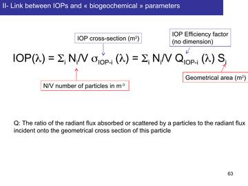

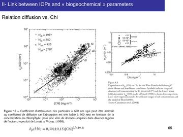
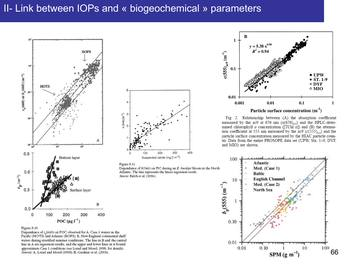
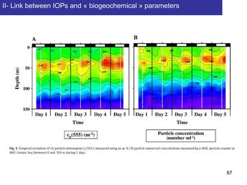
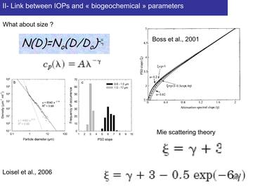

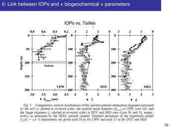
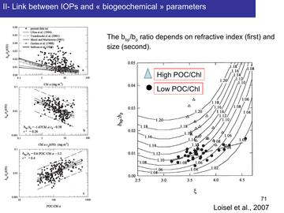
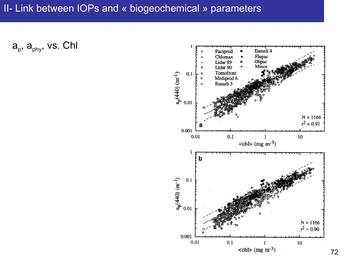


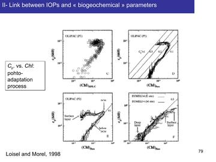

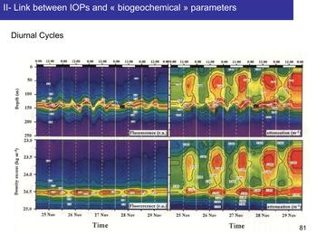


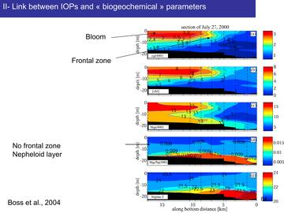
Exam checklist — points you must mention
- Write IOP = ΣNσ = ΣNQS and compute c for a population.
- Quote b_p = 0.30 Chl^0.7 and say it is empirical (spread ×2–3).
- Write ξ = γ + 3 and explain symbols.
- Explain what b_bp/b_p reveals.
- Explain quenching and the diel cycle of c_p.
- Summarise CDOM vs Chl, DOC and salinity.
- IOP = Σ N·Q·S; tán xạ hạt đi theo Chl, POC, SPM với độ phân tán ×2–3.
- ξ = γ + 3; b_bp/b_p phân biệt thực vật phù du với trầm tích.
- Huỳnh quang bị dập tắt ban ngày; c_p có chu kỳ ngày đêm.
Practice calculations
These tools run in your browser and are checked against Python:
Lecture slides (13 slides; use ← → keys or the buttons)
Quick self-check (12 of 18 questions)
Open the full bank: 18 multiple-choice + 3 essay questions →